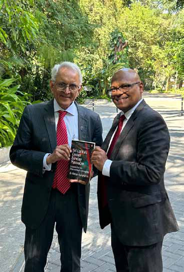
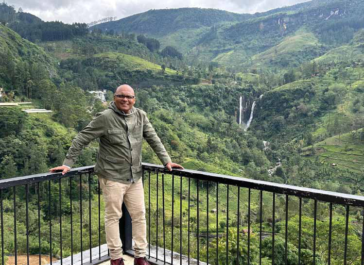

"Sri Lanka should build a network with Indian police intelligence and counter-terrorism units, including Tamil Nadu's Q Branch and Gujarat's Anti-Terrorism Squad, to combat the Islamic State threat."
"Sri Lanka should build a network with Indian police intelligence and counter-terrorism units, including Tamil Nadu's Q Branch and Gujarat's Anti-Terrorism Squad, to combat the Islamic State threat."
Jaffna Monitor hellojaffnamonitor@gmail.com 20 You have mentioned the need for community engagement and rehabilitation programs. What specific steps should Muslim community leaders take to combat radicalisation within their communities? After the Easter Sunday attack on April 21, 2019, the rehabilitation program was disrupted by Muslim organizations filing cases against the rehabilitation of extremists. This should first be addressed by explaining what rehabilitation is and why it is necessary to mitigate recidivism, regeneration, and terrorist iconography. The methods of rehabilitation, developed and designed to reform the beneficiaries, should be conducted by Muslim bodies in partnership with the Sri Lankan government. 1. Religious and spiritual rehabilitation, 2. Educational rehabilitation, 3. Vocational and entrepreneurial rehabilitation, 4. Social, cultural, and family rehabilitation, 5. Creative and performance arts in rehabilitation, 6. Sports and recreational rehabilitation, 7. Psychological rehabilitation, 8. Financial rehabilitation To build an effective rehabilitation program, each inmate should be assessed, categorised, engaged, and, transformed. In parallel, there should be a community engagement program in the physical and virtual space to address radicalisation. The approach is to detect and disrupt the cycle of suspicion, prejudice, resentment, hatred, anger, violence, and terrorism. In this regard, leaders of Buddhist, Hindu, and Christian communities should work closely with Muslim leaders to resolve any misunderstandings or disputes that can lead to hatred and violence. Similarly, clerics, madrasahs, and mosques that radicalized Muslims to join the Islamic State group that staged the Easter Sunday attack should be identified and reformed. Muslim leaders should exercise leadership to secure the Muslim religious space by constantly alerting its community members to be vigilant of infiltration. Why do you think there has been resistance or reluctance from some Muslim leaders to acknowledge and address the issue of radicalization? After the Easter Sunday attack, both the Sri Lankan government and Muslim leaders "Sri Lanka should build a network with Indian police intelligence and counter-terrorism units, including Tamil Nadu's Q Branch and Gujarat's Anti-Terrorism Squad, to combat the Islamic State threat."
Jaffna Monitor hellojaffnamonitor@gmail.com 21 should have taken the threat of Muslim radicalisation seriously. The Government and community should have built a sustained partnership and addressed the threat at a national and community level. To build a safe and secure community for all, the Government first, banned foreign radical and violent preachers; second, removed the Salafi Wahhabi and Jamaat-e-Islami textbooks surreptitiously introduced to OL and AL syllabi; and third, designated Salafi Wahhabi groups and Jamaat- e-Islami student wing groups. Ideally, the Government should have built an enduring partnership by creating trusted groups within the Muslim community. The Government should have shared information and intelligence about those in custody and those released on bail without rehabilitation. Unfortunately, Muslims as a community was suspected by the Sinhalese and Tamils. Even the Muslim leaders were asked to step down by Sinhala Buddhist extremist groups. Most Sri Lankan Muslim leaders are mainstream - except a handful, they are not religious fanatics. They love Sri Lanka and non- Muslims. Had the Muslims been taken into confidence by the Sri Lankan government, the outcome would have been to collectively build a safe and secure Sri Lanka for all communities. The Government should have permitted and facilitated mainstream Muslim leaders to visit the Easter Sunday attackers and supporters. Those detained were indoctrinated to erroneously believe that the attack was conducted to please Allah. In my view, most of the ideologues, perpetrators, and supporters still believe in ideology and will not lie. To me, they willingly and some proudly admitted to their role of indoctrinating, providing finance, and manufacturing explosives. There is an abundance of evidence that, as true believers, they perpetrated the Easter massacre. To me, they have admitted to their actions and thinking. Such a rendezvous would have convinced Muslim leaders, the elite, and the community to realize how their faith was distorted to conduct a barbaric attack. In return, the Muslim political, clerical, and community leaders would have informed the community that there is a real problem of religious radicalization in the community and taken steps to curb religious exclusivism. This did not happen, unfortunately. As Muslim leaders did not understand the gravity of this challenge, many live in denial to date. Their ostrich-style approach has damaged Islam's image as a peaceful faith and the reputation of Muslims as a harmonious community. Prof Rohan Gunaratna with Ambassador PS Raghavan, Chairman of the National Security Advisory Board, the advisory body of India's National Security Council.

Jaffna Monitor hellojaffnamonitor@gmail.com 22 It is high time for government and opposition leaders to develop a bipartisan approach to security threats. By continuously exploiting the Easter massacres as a political football to capture power and for their personal and political advantage, Sri Lanka will become like India, Pakistan, and Afghanistan, where there are frequent riots against Muslims and attacks by Muslims. The first step is to take the Muslims, especially their leaders, into confidence and for the Muslim leaders to reject conspiracy theories that the Easter attack was staged by the MOSSAD, RAW, or Sri Lankan intelligence. The Sri Lankan intelligence community is staffed at the apex and ground level by brilliant and patriotic Muslim rank and file, and they would never permit any senseless violence. If anyone has any doubt that the Easter massacre is not the work of religious fanatics, they should watch Zahran's farewell video and speak to Easter attack detainees and inmates. My interview with Zahran's successor Noufer, military chief Milhan, wife Hadiya, and others published now in "Sri Lanka's Easter Sunday Massacre- Lessons for the International Community" gives details of how the attack was conceptualized, planned, prepared, and executed. How can the Sri Lankan government and peace-loving Muslim leaders work together to prevent the spread of radical ideologies? Salafi Wahhabi and Jamaat-e-Islami ideologies are politico-religious doctrines of Saudi Arabia and Pakistan, respectively. Both countries experienced religious extremism that disrupted their social harmony, political stability, and economic prosperity. Furthermore, wherever these ideologies traveled, they radicalized Muslims to attack mainstream Muslims and then attack non-Muslims. The founder of Salafi-Wahhabism, Muhammad ibn Abd al-Wahhab, taught "al Wala Wal Bara" as the central piece of his doctrine. "Al Wala" means "loyalty" to Muslims, and "Wal Bara" means "hatred" of non-Muslims. Using this doctrine, Zahran indoctrinated thousands of his followers to kill non-Muslims. Zahran's farewell video is the best evidence. In a multicultural country like Sri Lanka, where Muslims and non-Muslims live, coexistence will be a challenge if Muslims are taught to "love" only Muslims and "hate" non-Muslims. That is what Zahran and his followers did, culminating in a dozen incidents, including the Easter Sunday attack. In the first place, the Sri Lankan government and peace-loving Muslim leaders should have never allowed Wahhabi ideology to enter and establish a presence in Sri Lanka. After 70-80 Saudi nationals joined al-Qaeda, Saudi leaders belatedly realized the danger of Wahhabism. Of the 19 al-Qaeda hijackers of the 9/11 attack, 15 were citizens of Saudi Arabia. Khalid Sheikh Mohammed from Pakistan was the attack coordinator now on trial in the US. To keep religious extremism in check, the religious space should be tightly controlled to ensure that teachings are moderate and respect all faiths. In Saudi Arabia, Crown Prince Mohammed bin Salman decided to reform the religious space admirably. He placed 5000- 6000 radical and violent clerics in the national security prisons that I visited. Similarly, Jamaat-e-Islami is the Asian version of the Muslim Brotherhood or Ikhwanul Muslimeen. Not only Christians in Egypt and Pakistan but mainstream Muslims witnessed
Jaffna Monitor hellojaffnamonitor@gmail.com 23 the brunt of these movements. These Islamic movements aim to transform their target countries into Islamic states and govern them by Sharia law. They endorse "Jihad," or holy war, with devastating consequences the world has witnessed. After the far-reaching rulers of UAE and Saudi Arabia realized the threat posed by these ideologies, they proscribed them. Sri Lankan Muslim clergy, community leaders, and politicians should have closely guarded Sufism, their local and traditional Islam that ensured peace between Muslims and non- Muslims for generations. However, before and after the Easter massacre, these foreign ideologies started to replace Sri Lanka's rich Muslim cultural and religious heritage. Before the massacre, they accepted donations and facilitated the spread of these foreign ideologies in Sri Lanka. After the Easter massacre, they did not learn. They unashamedly campaigned for the delisting of Salafi Wahhabi groups. The time is right to take firm action against these virulent ideologies or pay a heavy price in the coming years. The Sri Lankan government should ban these groups, confiscate their assets, and pay compensation to the victims of the Easter attack and other attacks. There have been allegations of conspiracy theories surrounding the Easter attack. How important is transparency and accountability in counter-terrorism efforts to build public trust? Today, a few Sri Lankan Muslim leaders believe in conspiracy theories. These theories are rampant in the Arab and Muslim world, Rohan Gunaratna visiting the hill country in Sri Lanka
